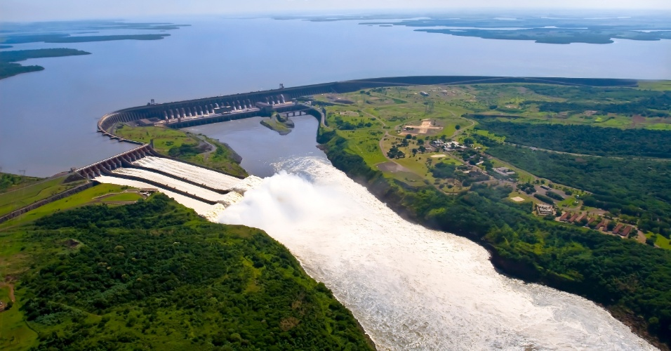

A Usina Hidrelétrica de Itaipu foi criada a partir de acordos políticos realizados entre Brasil e Paraguai e começou a ser construída em 1974. Após a conclusão das obras e com o início de seu funcionamento em 1984, a usina foi considerada uma das sete maravilhas do mundo moderno pela Associação Norte-Americana de Engenheiros Civis. Além de uma das principais fontes de energia elétrica para o país, a Usina é composta por um complexo turístico que atrai visitantes de todo o mundo para conhecer o empreendimento e toda a reserva natural que abriga.
Além das visitas monitoradas para conhecer a usina, existem espaços criados a partir das consequências geradas pela construção da mesma, como o Zoológico Regional e o Refúgio Bela Vista, construídos para abrigar os animais que habitavam a região. O refúgio pode ser acessado através de uma caminhada de 2km por uma trilha ecológica. Opções como o Ecomuseu, que expõe a história da região desde seus primeiros habitantes, também fazem parte desse complexo.
A Usina de Itaipu impressiona pelo seu tamanho. A barragem principal tem 196 m de altura, o que corresponde a um prédio de 65 andares. Tanto a barragem como o vertedouro podem ser vistos pelo mirante central. A barragem serve para reter o curso do rio formando o reservatório da usina e o vertedouro é usado para escoar o excesso de água decorrente de chuvas. Vinte condutos, medindo mais de dez metros de diâmetro cada, desviam a água do Rio Paraná para a produção de energia elétrica. A Usina, considerada a maior hidrelétrica do mundo em termos de geração de energia, é responsável por gerar energia para mais de um quarto do Brasil e para quase todo o Paraguai, com capacidade de 14 mil megawatts de potência. Por pertencer ao Brasil e ao Paraguai, tem caráter binacional. Visitações na estrutura interna de Itaipu são realizadas apenas com agendamento.
Como forma de incentivar a expansão de tecnologias ligadas à geração de energia foi criado em 2003 o Parque Tecnológico de Itaipu, que atua em diferentes níveis de ensino e possui em sua estrutura ambientes como observatório, planetário e espaço para produção de artesanato compartilhado (Brasil, Paraguai e Argentina). Além disso, o parque tecnológico é responsável pela gestão dos atrativos turísticos pertencentes ao Complexo Turístico de Itaipu.
A Usina de Itaipu é uma das âncoras do turismo em Foz do Iguaçu e no Paraná. Dessa forma, está sempre se renovando. Em 2009, inaugurou sua mais nova atração, dentro do Parque Tecnológico de Itaipu: o Polo Astronômico Casimiro Montenegro Filho, um dos mais modernos complexos de astronomia do mundo, reunindo de forma integrada planetário e observatório astronômico. O nome é em homenagem ao patrono da engenharia da aeronáutica brasileira, justamente no ano em que se comemora o Ano Internacional da Astronomia.
Conforme a Secretaria de Estado de Turismo do Paraná, cerca de 70% dos que visitam Itaipu são brasileiros, seguidos por 8% de argentinos e 12% de outros países como China e Alemanha. A Usina é considerada um dos pontos turísticos mais visitados do Estado.
Oque representa a energia da Itaipú para o Brasil e Paraguái?
Com 20 unidades geradoras e 14.000 MW de potência instalada, Itaipu fornece cerca de 17% da energia consumida no Brasil e 75% do consumo paraguaio.
É a maior geradora de energia limpa e renovável do planeta, tendo produzido mais de 2,2 bilhões de MWh (2.223.476.053 MWh) desde o início de sua operação até o final do ano de 2014.
Seu atual recorde anual de produção de energia, 98,6 milhões de MWh, foi obtido no ano de 2013.
Quanto custou a obra da Itaipú?
O Ativo Imobilizado no Balanço Patrimonial de 2012 totalizando US$ 17,5 bilhões pode representar o valor da construção da Itaipu.
Neste total, porém, estão incorporados os encargos financeiros incorridos durante a construção até a entrada em operação de cada unidade geradora.
Ao desconsiderar estes encargos, obtém-se o Investimento Direto, que corresponde a US$ 11,9 bilhões, em dezembro de 2012, assim verifica-se que o custo direto do empreendimento seria de aproximadamente US$ 849 por kW instalado.
Os recursos captados para a construção, incluindo as rolagens financeiras, totalizaram US$ 27 bilhões, além dos US$ 100 milhões de Capital Social.
Fontes:
itaipu.gov.br
tehcities.com.br